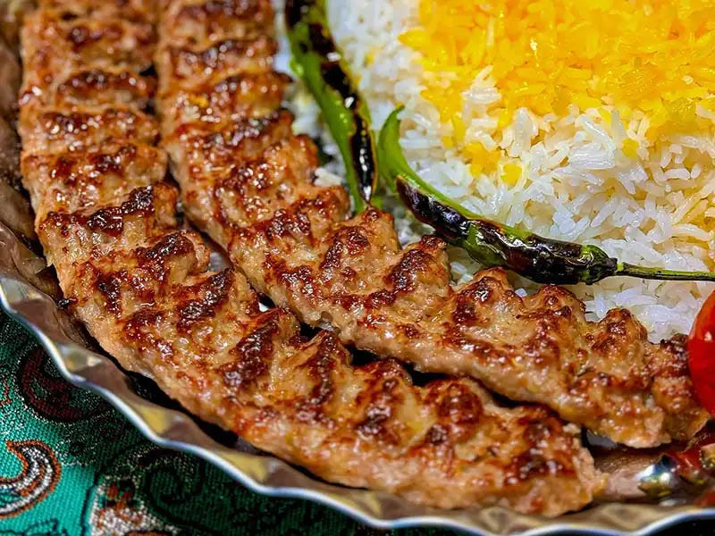

Koobideh

Kabab Koobideh is made from ground lamb or beef or a mix of both.
It simply translates to slammed kabab, because of how it was traditionally made.
Ingredients
- 1 Kg ground lamb or beef
- 3 onions
- 4 tbsp butter
- 1 tsp baking soda
- 1 tsp salt
- 1/4 tsp red pepper
- 1/4 tsp ground saffron
- 2 ice cubes to bloom the saffron
Steps
Prepare the meat
-
Peel and grate the onions using the coarse setting. Then, squeeze most of the moisture out of the grated onions. Take a handful of grated onions and squeeze it with both hands, but be careful not to make it too dry. After squeezing, I weighed the grated onions and found that three onions resulted in 300g or 10.5oz.
-
Combine the ground meat with the grated onions, red pepper, salt, and baking soda. The baking soda is an optional ingredient. It is used to make the kabab puff up a little. Knead all the ingredients together until the mixture becomes slightly sticky. You will notice the meat releasing the fat and that’s a sign that you kneaded enough.
-
Cover the bowl and place it in the fridge for at least 1 hour. This causes the meat to firm up a little, which makes it easier to work with later. Also, the ingredients have some time to get to know each other.
-
Before starting with the Koobideh in 2 hours, I recommend sorting out all the rest because when it’s time, you need to focus on the Koobideh and the Koobideh only.
-
Bloom the saffron
-
If you have saffron threads grind them, using pestle and mortar. Sprinkle the ground saffron over the ice cubes and set them aside until later.
-
Prep any side dishes
-
This means, preparing the rice. Chop onions, if you want any. Peel garlic or whatever preparations you want to make, depending on how you serve your Koobideh. Get the BBQ going.
-
Speaking of which, definitely use lump wood charcoal, not Briquettes. Lumpwood reaches a higher temperature and doesn’t last long, which is ideal for Koobideh. Briquettes last longer but don’t get as hot, so they are more useful for slowly grilled or smoked dishes.
-
Barbecue the tomatoes beforehand, even if there’s enough space on the BBQ. They take way longer than the kababs.
-
Prep the saffron butter
-
Melt the butter and combine it with the saffron butter. We’ll need it in the end.
-
Skewer the kababs
-
Now it’s time to shape the meat around the skewers. Koobideh is usually barbecued on wide flat skewers (around 15mm / 0.6″) but if you only have the regular Persian kabab skewers, you can use those.
-
There are a few reasons the meat falls off the skewers in the BBQ. Most of them are easily prevented. We’ll get to the rest later.
-
The skewers shouldn’t be hot.
-
The skewers shouldn’t be wet
-
If it’s a hot day and the meat has warmed up again, place it in the fridge once more. The meat is too warm and therefore soft can cause it to fall off, even before it gets on the BBQ.
-
Knead the meat mixture until it becomes sticky once more. This shouldn’t take longer than a minute. Divide the meat into about 130g / 4.5oz portions. Have a small bowl of water nearby to wet your hand before working the meat. By the way, I’m still talking about Koobideh.
-
It would be best if you had the right place to put the finished skewers. Don’t just put them on a plate! Use a large baking tray for example, so that the meat doesn’t come in touch with any surface.
-
Take one portion of meat in one hand and a skewer in the other. For some reason holding the meat on the left is much easier for me, although I am right-handed. Try what works best for you.
-
Form the meat into a sausage shape, about the length of the width of your hand (if you have googooli hands like me). Then push the centre of the skewer sideways into the meat sausage. Close the meat around it and spread it across the skewer by closing and opening your hand in an upward un downward motion.
-
Make sure the ends are neat.
-
We will barbecue the Koobideh over very high heat for a short amount of time, so you don’t want them too chunky, which won’t allow them to cook through. You also don’t want them too thin, so that they burn or lose their juiciness. Also, try to get them as even as possible, so one side doesn’t burn while the other stays raw.
-
When the meat is spread out evenly, make dents into the meat in bite-sized intervals.
-
Grill the Kabab Koobideh
-
Then the moment of truth has come. The BBQ should be hot, so before you get started make sure it’s fired up. Try to place all the skewers on the BBQ at once (if they all fit on it, otherwise BBQ them in two batches). Get some help from someone sober. And here is where trick number four comes in.
-
After only 10 seconds after all the skewers are on the hot BBQ, turn them starting with the one you put on first. Your sober friend may give you a hand again. This prevents one side from fully cooking while the top side is raw, which can cause the cooked side to drop into the flames of hell and never return.
-
Continue in this rhythm, starting to turn the skewers only a few seconds after you turn the last one.
-
Don’t worry if flames pop up in the beginning. That’s because of the fat dripping down on the charcoal. As soon as the outer layer of both sides is sealed (which happens in a matter of seconds) there shouldn’t be any flames anymore. If there are any, lower the charcoal, if your BBQ allows for that, because this can cause the kababs to burn.
-
The whole process only takes about 5 to 10 minutes. Take them off the BBQ as soon as they are done. Kabab Koobideh should be juicy and it shouldn’t be charred like some other types of kabab.
-
Brush the kababs with the melted saffron butter. Serve the Kabab Koobideh with grilled tomatoes and any other sides you enjoy!
Homepage